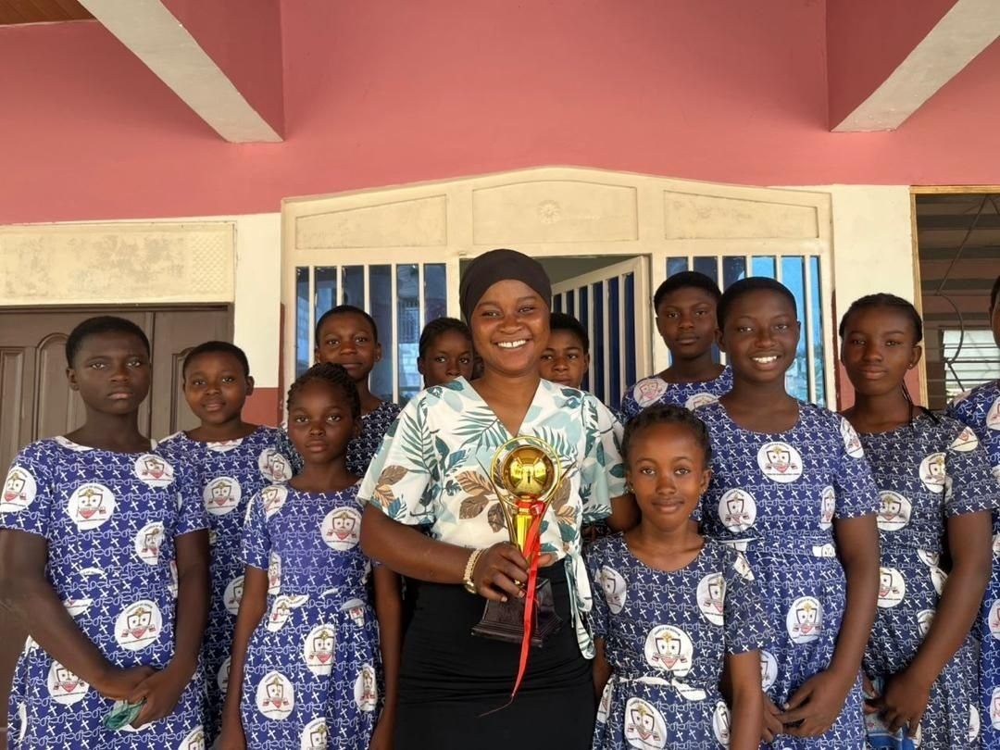
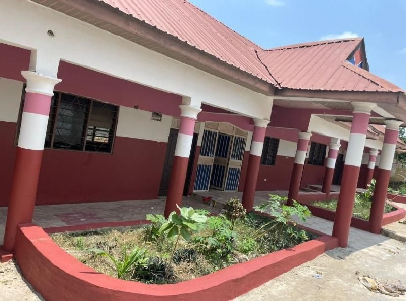
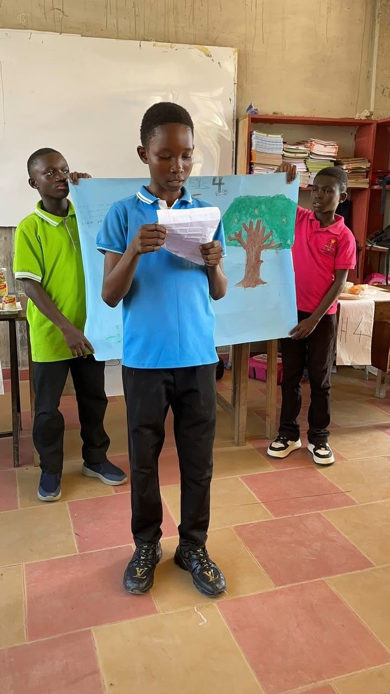
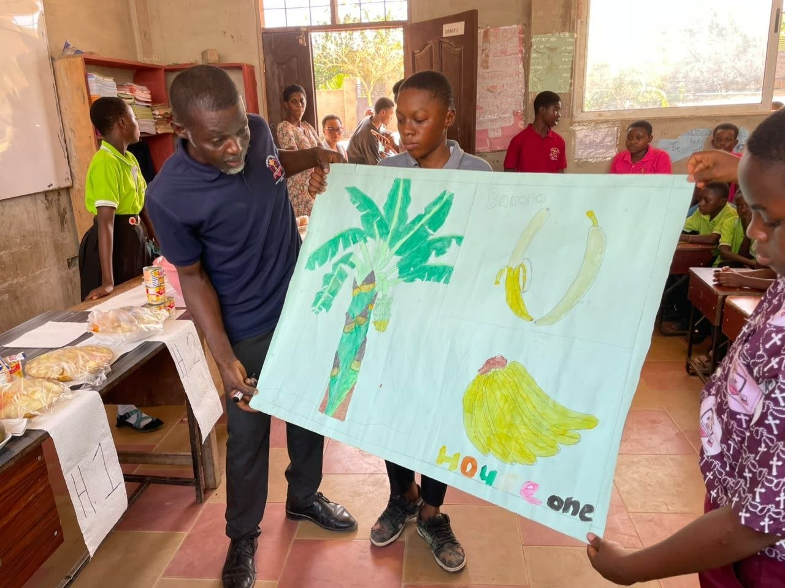
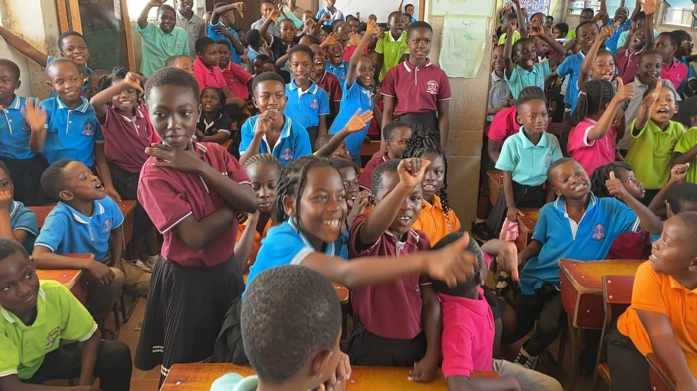

Knowledge
Building strong foundations in important areas of learning and developing understanding step by step.

Creating meaningful learning experiences that help children build knowledge, confidence, skills and character.

At Vessel of Honour School, we believe effective education should do more than transfer information. It should encourage learners to ask questions, explore ideas and develop the confidence to use what they learn.
Our academic approach is designed around the development of knowledge, skills, creativity, communication and responsible behaviour.
Our working academic framework focuses on helping learners develop both what they know and how they apply it.
Building strong foundations in important areas of learning and developing understanding step by step.
Encouraging learners to ask questions, analyse ideas and approach challenges thoughtfully.
Helping children express ideas clearly, listen to others and collaborate effectively.
Supporting confidence, resilience, creativity and responsible behaviour.
The learning areas below are presented as a development draft. The school's official subject list and curriculum structure will be inserted after confirmation by management.
Developing reading, writing, speaking, listening and communication skills.
Draft learning area — official curriculum information to be confirmed.Developing number sense, logical thinking, problem solving and practical mathematical understanding.
Draft learning area — official curriculum information to be confirmed.Encouraging observation, questioning, experimentation and understanding of the world around us.
Draft learning area — official curriculum information to be confirmed.Helping learners understand people, communities, cultures and the environment.
Draft learning area — official curriculum information to be confirmed.Providing opportunities for imagination, artistic expression and creative thinking.
Draft learning area — official curriculum information to be confirmed.Supporting healthy movement, coordination, teamwork and active participation.
Draft learning area — official curriculum information to be confirmed.We want learners to leave each stage of their education with stronger knowledge, greater confidence and an increasing ability to take responsibility for their learning.
Learning experiences can be strengthened when children are encouraged to participate, practise, reflect and apply their knowledge.

Early learning provides an important foundation for future academic, social and personal development.
Encouraging children to communicate, listen, recognise language patterns and develop early literacy skills.
Introducing children to numbers, patterns, shapes, measurement and problem-solving through age-appropriate experiences.
Supporting cooperation, confidence, communication and positive relationships.
As learners progress, academic experiences can become increasingly structured while continuing to encourage curiosity and confidence.
Building strong foundations in literacy, numeracy, communication and learning habits.
Encouraging learners to ask questions, investigate ideas and think through problems.
Helping learners become increasingly confident in managing tasks, making decisions and reflecting on their progress.

A strong classroom experience gives learners opportunities to participate rather than simply receive information.
Our working approach encourages teachers to create opportunities for discussion, practice, questioning, collaboration and reflection.
Encouraging learners to participate actively in lessons.
Giving learners opportunities to explore and ask questions.
Developing communication and teamwork through shared learning experiences.
Supporting learners as they build skills and confidence.
School life can provide opportunities for learners to discover interests, develop confidence and build relationships outside formal lessons.
Supporting teamwork, discipline, movement and healthy participation.
Specific school sports to be confirmed.Encouraging imagination, artistic expression and creativity.
Specific school activities to be confirmed.Creating opportunities for learners to explore interests and work with others.
Official clubs to be confirmed.Encouraging learners to apply ideas through practical and collaborative activities.
Official school projects to be confirmed.Temporary images are being used during development. Authentic school photographs will replace these later.

Learners develop at different rates. A supportive academic environment recognises this and encourages steady progress.
Encouraging learners who need additional guidance, practice or confidence.
Using appropriate assessment experiences to understand learning and identify areas for improvement.
Official assessment practices to be confirmed.Recognising the important role families play in supporting children's educational journeys.
This Academics page currently uses carefully written development content. The school's official curriculum, subject list, year-group structure, examination information and other academic details will be added once supplied by management.